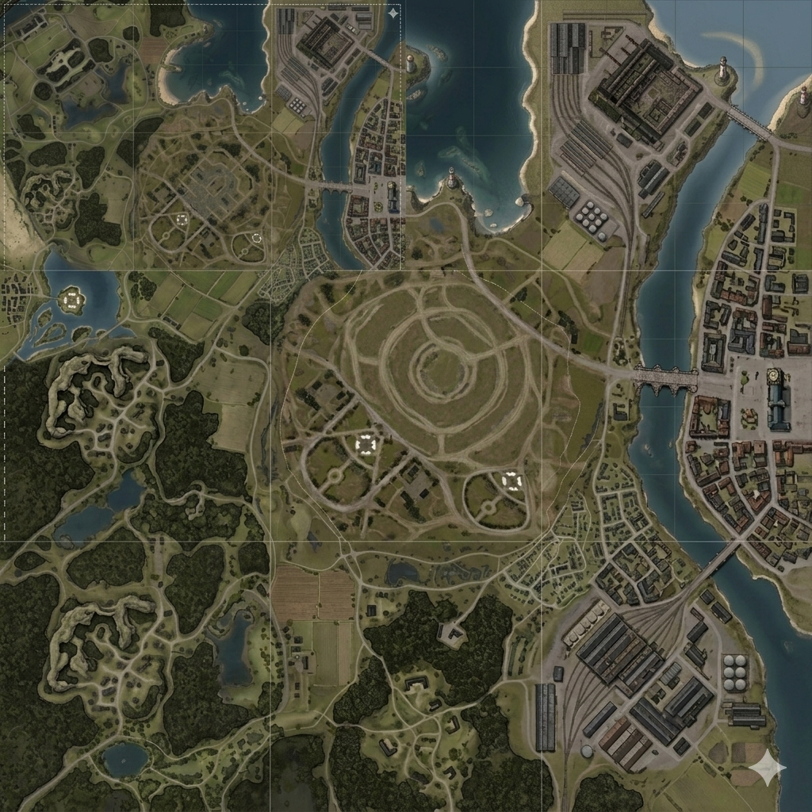
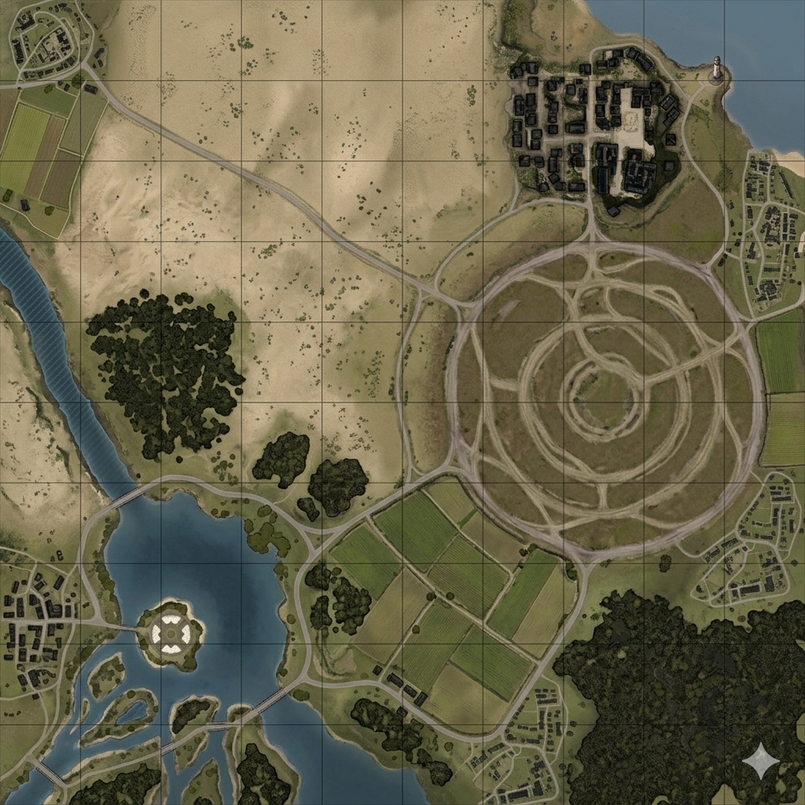
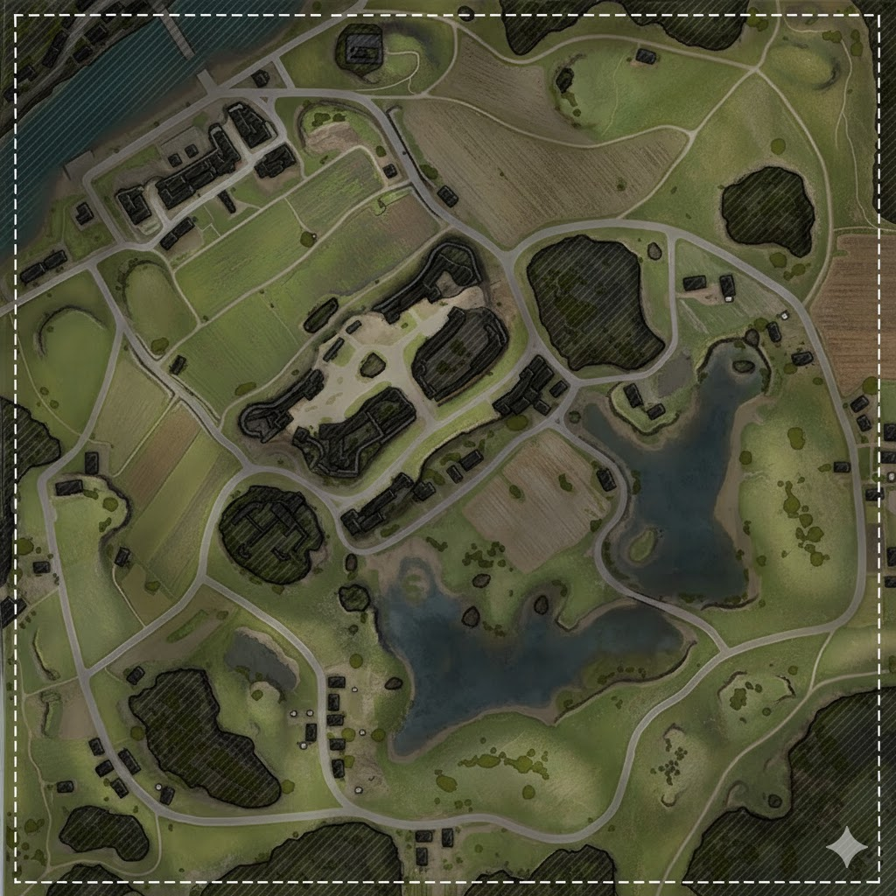

Selectionnez une carte

▶ Carentan
Zone urbaine dense. Combat de rues et controle des carrefours strategiques.

▶ Marais du Nord
Terrain marecageux. Couloirs etroits et points de passage limites.

▶ Bocage Normand
Campagne ouverte avec lacs et forets. Flancs exposes, mobilite cle.

▶ Foret de Vire
Lignes de vue courtes, couverture dense et percees rapides sur les flancs.

▶ Monts d'Acier
Carte large avec axe central dominant. Ideale pour blindes et manoeuvres.